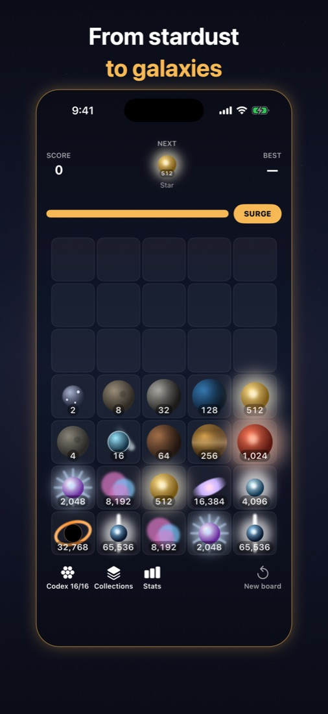
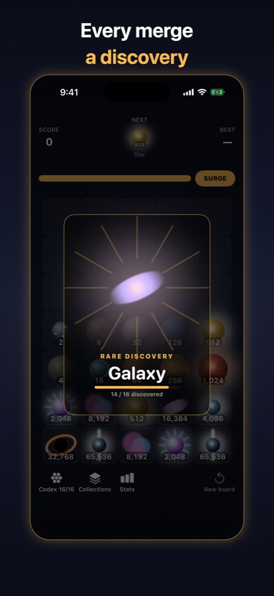
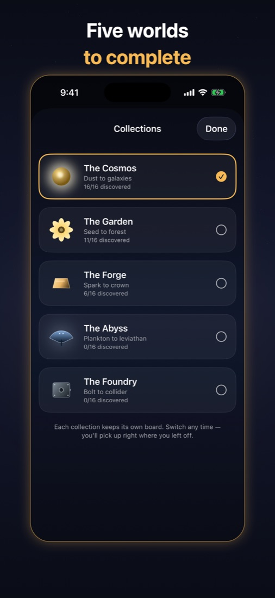
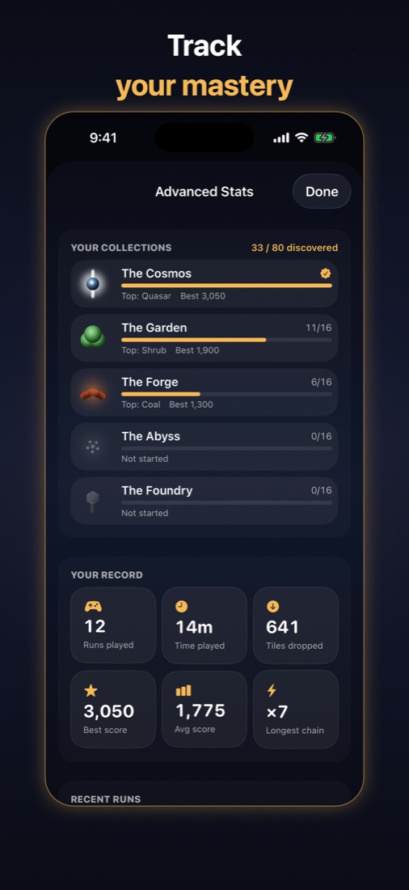
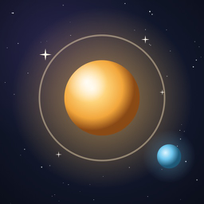

Everything you need to write about Tumbry. All images may be used in coverage.
| Title | Tumbry |
| Developer | Raja Erupaka (independent, solo) |
| Release date | 30 August 2026 |
| Platform | iPhone, iOS 17 or later |
| Genre | Merge puzzle |
| Price | Free. Optional one-time Tumbry+ unlock, $2.99 (US) |
| Ads, tracking | None. App Store privacy label: Data Not Collected |
| Connectivity | Fully offline, no account |
| Age rating | 4+ |
| App Store | View Tumbry on the App Store |
| Press contact | tumbryapp@gmail.com |
Tumbry is a merge puzzle for iPhone where one drop can set off a chain reaction across the board, and every tile you make is a new world to collect, from stardust to quasars.
You tap a column to drop a tile. Matching tiles merge, and a merge can trigger the next, and the next, in a chain reaction that blooms across the board. Each tile is a world: stardust becomes rock, rock becomes planets, planets ignite into stars, and stars collapse into galaxies, black holes and quasars. A Codex records every world you find.
There are no timers, no energy meters and no ads. When the board gets tight, a Surge clears space so a good run can keep going, and the board saves after every move.
Tumbry+ is a single optional purchase that adds four more collections, each with its own board and its own ladder of 16 bodies: The Garden (seed to forest), The Forge (spark to crown), The Abyss (plankton to leviathan) and The Foundry (bolt to collider), plus Advanced Stats.
Click any image for the full-resolution file (1320 × 2868).

Board
Discovery
Collections
Advanced Stats Codex (full size) Collection switch (full size)
App icon, 1024 × 1024 PNG · Banner, 1200 × 630 JPG
For review access to Tumbry+, interviews or anything else, email tumbryapp@gmail.com.